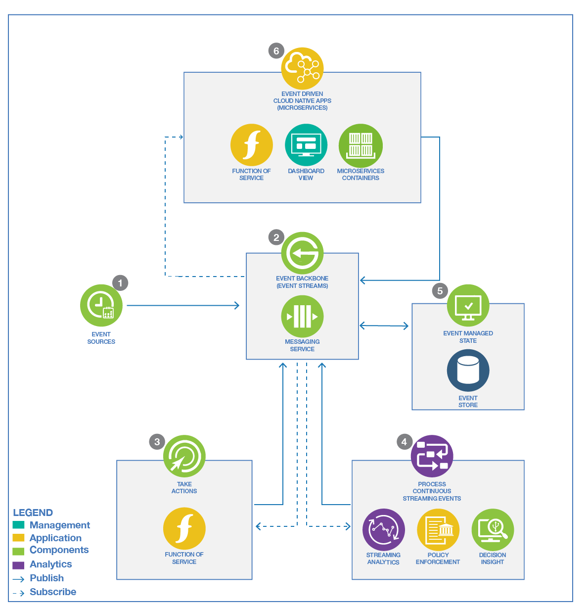

Reference Architecture
We defined the starting point for a Cloud Native Event Driven Architecture to be that it supports at least the following important capabilities:
- Being able to communicate and persist events.
- Being able to take direct action on events.
- Processing streams of events to derive real time insight/intelligence.
- Providing communication between event driven microservices and functions.
With an event backbone providing the connectivity between the capabilities, we can visualize a reference Event Driven Architecture as below:

Where:
- Event sources: generates events and event streams from sources such as IoT devices, web app, mobile app, microservices…
- IBM Event Streams: Provides an Event Backbone supporting Pub/Sub communication, an event log, and simple event stream processing based on Apache Kafka.
- IBM Cloud Functions: Provides a simplified programming model to take action on an event through a "serverless" function-based compute model.
- Streaming Analytics: Provides continuous ingest and analytical processing across multiple event streams. Decision Server Insights: Provides the means to take action on events and event streams through business rules.
- Event Stores: Provide optimized persistence (data stores), for event sourcing, Command Query Response Separation (CQRS) and analytical use cases.
- Event Driven Microservices: Applications that run as serverless functions or containerized workloads which are connected via pub/sub event communication through the event backbone.
Extended Architecture
The event-driven reference architecture provides the framework to support event-driven applications and solutions. The extended architecture provides the connections for:
- Integration with legacy apps and data resources
- Integration with analytics or machine learning to derive real-time insights
The diagram below shows how these capabilities fit together to form an extended event-driven architecture.

In 7. the AI workbench includes tools to do data analysis and visualization, build training and test sets from any datasource and in particular Event Store, and develop models. Models are pushed to streaming analytics component.
Integration with analytics and machine learning
The extended architecture extends the basic EDA reference architecture with concepts showing how data science, artificial intelligence and machine learning can be incorporated into an event-driven solution.
The starting point for data scientists to be able to derive machine learning models or analyze data for trends and behaviors is the existence of the data in a form that they can be consumed. For real-time intelligent solutions, data scientists typically inspect event histories and decision or action records from a system. Then, they reduce this data to some simplified model that scores new event data as it arrives.
Getting the data for the data scientist:
With real-time event streams, the challenge is in handling unbounded data or a continuous flow of events. To make this consumable for the data scientist you need to capture the relevant data and store it so that it can be pulled into the analysis and model-building process as required.
Following our event-driven reference architecture the event stream would be a Kafka topic on the event backbone. From here there are two possibilities for making that event data available and consumable to the data scientist:
- The event stream or event log can be accessed directly through Kafka and pulled into the analysis process
- The event stream can be pre-processed by the streaming analytics system and stored for future use in the analysis process. You have a choice of store type to use. Within public IBM cloud object storage Cloud Object Store can be used as a cost-effective historical store.
Both approaches are valid, pre-processing through streaming analytics provides opportunity for greater manipulation of the data, or storing data over time windows for complex event processing. However, the more interesting distinction is where you use a predictive (ML model) to score arriving events or stream data in real time. In this case you may use streaming analytics to extract and save the event data for analysis, model building, and model training and also for scoring (executing) a derived model in line in the real time against arriving event data.
- The event and decision or action data is made available in cloud object storage for model building through streaming analytics.
- Models may be developed by tuning and parameter fitting, standard form fitting, classification techniques, and text analytics methods.
- Increasingly artificial intelligence (AI) and machine learning (ML) frameworks are used to discover and train useful predictive models as an alternative to parameterizing existing model types manually.
- These techniques lead to process and data flows where the predictive model is trained offline using event histories from the event and the decision or action store possibly augmented with some supervisory outcome labelling, as illustrated by the paths from the
Event BackboneandStream Processingstore intoLearn/Analyze. - A model trained in this way includes some “scoring” API that can be invoked with fresh event data to generate a model-based prediction for future behavior and event properties of that specific context.
- The scoring function is then easily reincorporated into the streaming analytics processing to generate predictions and insights.
These combined techniques can lead to the creation of real-time intelligent applications: 1. Event-driven architecture 2. Identification of predictive insights using event storming methodology 3. Developing models for these insights using machine learning 4. Real-time scoring of the insight models using a streaming analytics processing framework
These are scalable easily extensible, and adaptable applications responding in near real time to new situations. There are easily extended to build out and evolve from an initial minimal viable product (MVP) because of the loose coupling in the event-driven architecture, , and streams process domains.
Data scientist workbench
To complete the extended architecture for integration with analytics and machine learning, consider the toolset and frameworks that the data scientist can use to derive the models. Watson Studio provides tools for data scientists, application developers, and subject matter experts to collaboratively and easily work with data to build and train models at scale.
For more information see Getting started with Watson Studio.
Legacy integration
While you create new digital business applications as self-contained systems, you likely need to integrate legacy apps and databases into the event-driven system. Two ways of coming directly into the event-driven architecture are as follows:
-
Where legacy applications are connected with MQ. You can connect directly from MQ to the Kafka in the event backbone. See IBM Event Streams getting started with MQ article.
-
Where databases support the capture of changes to data, you can publish changes as events to Kafka and hence into the event infrastructure. See the confluent blog for more details